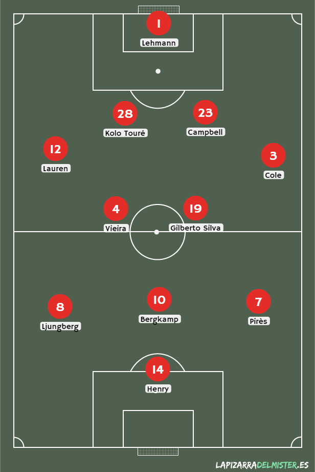
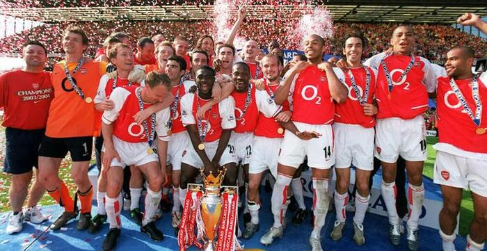

Los invencibles de la Premier League 2003-04
¡Qué recuerdos, qué disfrute de equipo! Podríamos decir que este equipo de Arsene Wegner marcó no solo una época, sino que dejó en el fútbol un estilo único, que luego sería aplicado por otros dts. Antes de adentrarnos más recordemos la plantilla de los Invencibles:
Era un equipo con jugadores que estaban en el top mundial. Leyendas como Henry, Bergkamp, Pirés, Vieira, Campbell, Cole y Lehmann. Una temporada fabulosa en la que consiguieron 26 victorias, 12 empates y 0 derrotas, acabando la temporada invictos, logro que ningún otro equipo inglés pudo conseguir en la Premier.
El goleador del equipo y de la premier fue Henry con 30 tantos, mientras que el mayor asistidor fue Pirés.
Lastimosamente el Arsenal perdió la final de la Champions League días después de congrarse campeón de la Premier. Es la única espina que quedó en este grupo de jugadores y entrenadores increíbles que dejaron un fútbol hermoso, que hacía que desde todas partes del mundo la gente los vea.En este video pueden ver un resumen de todos los partidos de la temporada, agarren algo para comer y disfruten del fútbol: